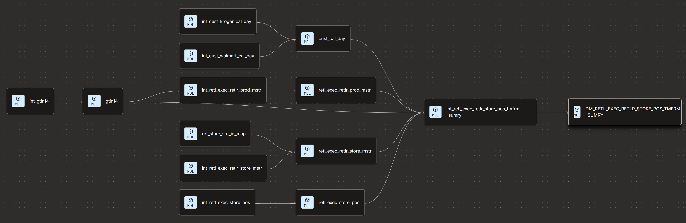

Consolidated Retail Execution Data Mart for SAAG Reporting
Replaced fragmented brand, category, store, and item-level tables with a single high-performance dbt mart delivering 14 KPI metrics across L4W, L13W, and YTD for Kroger and Walmart.
Overview
Authored and developed a consolidated dbt [Data Build Tool] transformation model for the Retail Execution Data Mart, replacing multiple brand, category, store, and item/UPC-level tables with a single, high-performance mart covering 14 pre-computed KPI metrics across L4W, L13W, and YTD time-frames for Kroger and Walmart, aligned to retailer-specific fiscal calendars. Drove design decisions that reduce redundancy and improved query performance for downstream BI and Agentic AI consumption, with automated weekly refresh via scheduled dbt job.
Description
Field sales and merchandising teams relied on separate brand, category, store, and item/UPC-level tables to evaluate retail execution performance, forcing downstream BI reports and Agentic AI consumers to reconcile duplicated logic across multiple objects for Sales, Assortment, Availability, and Growth (SAAG) reporting.
- Redundant tables recomputed the same rolling-window and YOY logic at multiple grains, inflating maintenance and compute cost.
- Kroger and Walmart each run distinct fiscal calendars, making like-for-like L4W/L13W/YTD and YOY comparisons error-prone.
- No single, high-performance mart existed to serve both BI dashboards and Agentic AI consumption consistently.
Key Challenges
- Reconciling Kroger's 4-5-4 (Saturday week-end) and Walmart's 4-4-5 (Friday week-end) fiscal calendars into one consistent period framework.
- Aligning YOY comparisons to the matching fiscal week number rather than a fixed 52-week lookback, across both retailers.
- Consolidating brand, category, store, and item/UPC-level tables into a single mart without losing item-level granularity or duplicating computation.
- Building self-healing, run-day-agnostic scheduling so each retailer independently resolves its last complete fiscal week without manual overrides.
- Absorbing source data quality issues (e.g., inconsistent date-string formatting) defensively without breaking scheduled runs.
- Maintaining query performance for a ~2B row POS fact table feeding both BI dashboards and Agentic AI.
Solution Highlights
- Authored a two-layer dbt architecture: an ephemeral intermediate model owning all transformation logic (calendar alignment, period boundaries, YOY pivot, KPI calculations), inlined into a thin incremental mart that owns materialization, clustering, hooks, and access grants.
- Authored the customer fiscal calendar dbt models (day and week grain) for both Kroger (4-5-4) and Walmart (4-4-5), including period/quarter/half hierarchy and fiscal close-date logic.
- Designed a self-healing, per-retailer reference-date resolution anchored to each retailer's latest loaded POS date, snapped to its fiscal week-end day-of-week, removing the need for manual scheduling variables.
- Built CURR/PREV YOY pivoting keyed on matching fiscal week number across L4W, L13W, and YTD windows for accurate like-for-like comparisons.
- Consolidated brand, category, store, and item/UPC-level reporting into one mart at Store × Product × Time-frame grain, replacing multiple redundant tables.
- Configured incremental delete+insert materialization with retailer-scoped unique keys and clustering (retailer, timeframe, category, brand) to optimize downstream query performance.
- Automated weekly refresh via a scheduled dbt job with environment-aware Snowflake access grants for dev/QA vs. production.
Results & Impact
- Replaced multiple brand, category, store, and item/UPC-level tables with a single consolidated Retail Execution Data Mart.
- Delivered 14 pre-computed KPI metrics (current, prior year, absolute and percent YOY change, and weekly averages) across three time-frames for two retailers in one queryable object.
- Directly powers Sales, Assortment, Availability, and Growth (SAAG) reporting for field sales and merchandising teams.
- Reduced redundancy and improved query performance for downstream BI dashboards and Agentic AI consumption.
- Enabled fully automated, self-healing weekly refreshes resilient to delayed or out-of-sync retailer feeds.
- Established a reusable, retailer-aligned fiscal calendar foundation (Kroger and Walmart) for future reporting models.
Tech Stack
- dbt (Data Build Tool) — ephemeral and incremental models
- Snowflake — incremental delete+insert, clustering, role-based access grants
- Jinja macros for per-retailer fiscal ref-date resolution and week-end configuration
- Retailer fiscal calendars — Kroger (4-5-4), Walmart (4-4-5)
- SQL window functions and CURR/PREV pivot aggregation
- Scheduled dbt jobs for automated weekly refresh
Architecture
